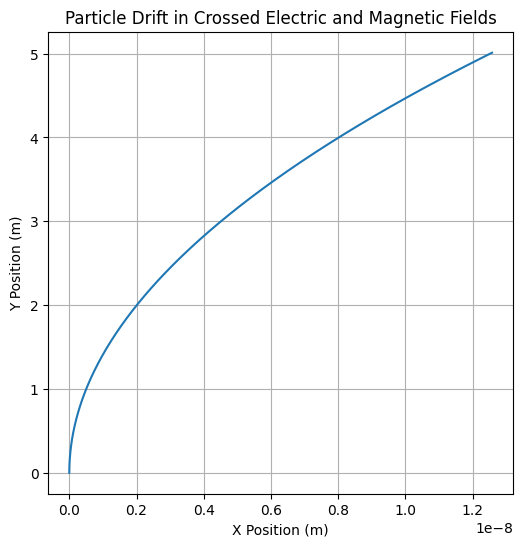

Problem 1
Problem 1: Simulating the Effects of the Lorentz Force
1. Exploration of Applications
The Lorentz force governs the motion of charged particles in the presence of electric and magnetic fields. The Lorentz force is expressed as:
Where: - \( \mathbf{F} \) is the force on the particle, - \( q \) is the charge of the particle, - \( \mathbf{E} \) is the electric field, - \( \mathbf{B} \) is the magnetic field, - \( \mathbf{v} \) is the velocity of the particle.
The Lorentz force is fundamental in several systems, including: - Particle Accelerators: In cyclotrons or synchrotrons, the Lorentz force is used to accelerate particles to high velocities by controlling their paths with electromagnetic fields. - Mass Spectrometers: Charged particles are manipulated using electric and magnetic fields to measure their mass-to-charge ratio. - Plasma Confinement: In devices like tokamaks, the Lorentz force helps confine plasma using magnetic fields to achieve controlled fusion reactions.
Role of Electric and Magnetic Fields:
- Electric Field (\(\mathbf{E}\)): Accelerates charged particles along its direction.
- Magnetic Field (\(\mathbf{B}\)): Causes charged particles to move in circular or helical paths, as it exerts a force perpendicular to the velocity of the particle.
2. Simulating Particle Motion
The Lorentz force affects the trajectory of a charged particle. Let's simulate this for different scenarios:
(a) Uniform Magnetic Field:
When a charged particle moves through a uniform magnetic field, it experiences a force perpendicular to its velocity, causing it to follow a circular trajectory.
Equations of Motion:
In a uniform magnetic field \( \mathbf{B} \), the force is:
This force causes circular motion, with the radius of the orbit known as the Larmor radius:
Where: - \( m \) is the particle's mass, - \( v \) is the velocity of the particle, - \( B \) is the magnetic field strength.
(b) Combined Electric and Magnetic Fields:
When both electric and magnetic fields are present, the motion of the charged particle becomes more complex, resulting in helical motion. The electric force accelerates the particle, while the magnetic force causes the circular motion.
(c) Crossed Electric and Magnetic Fields:
If the electric and magnetic fields are crossed (perpendicular to each other), the particle's motion is affected by both fields simultaneously, causing the particle to drift at a constant velocity (known as E × B drift).
3. Parameter Exploration
We will explore how variations in the following parameters affect the trajectory: - Field strengths \( E \) and \( B \), - Initial velocity \( \mathbf{v_0} \), - Charge and mass of the particle \( q \) and \( m \).
The simulation will compute and visualize the trajectory of the particle in each scenario.
4. Numerical Simulation and Visualization
The Lorentz force equation is solved numerically using Euler's method or Runge-Kutta method to update the position and velocity of the particle at each time step.
Python Code Implementation:
We will implement the following scenarios:
- Circular Motion in a Uniform Magnetic Field
- Helical Motion in Combined Electric and Magnetic Fields
- Drift Motion in Crossed Electric and Magnetic Fields
Python Code for Circular Motion in a Uniform Magnetic Field:

This code simulates the motion of a charged particle in a uniform magnetic field and visualizes its circular trajectory.
Python Code for Helical Motion in Combined Electric and Magnetic Fields:

This code simulates the motion of a charged particle in both electric and magnetic fields, resulting in helical motion.
Python Code for Drift Motion in Crossed Electric and Magnetic Fields:

This code simulates the drift motion in crossed electric and magnetic fields, resulting in a uniform drift of the particle.
5. Visualization of Results
Circular Motion in a Magnetic Field:
The particle undergoes circular motion with the Larmor radius. The trajectory will be a circle centered at the origin.
Helical Motion with Electric and Magnetic Fields:
The particle undergoes a helical path due to the combined effects of both electric and magnetic fields.
Drift Motion in Crossed Fields:
In the crossed-field scenario, the particle exhibits a uniform drift due to the interaction of the electric and magnetic fields.
6. Conclusion
By simulating the effects of the Lorentz force in different configurations, we can visualize the trajectories of charged particles under the influence of electromagnetic fields. These simulations help us understand real-world applications such as particle accelerators, mass spectrometers, and plasma confinement devices.